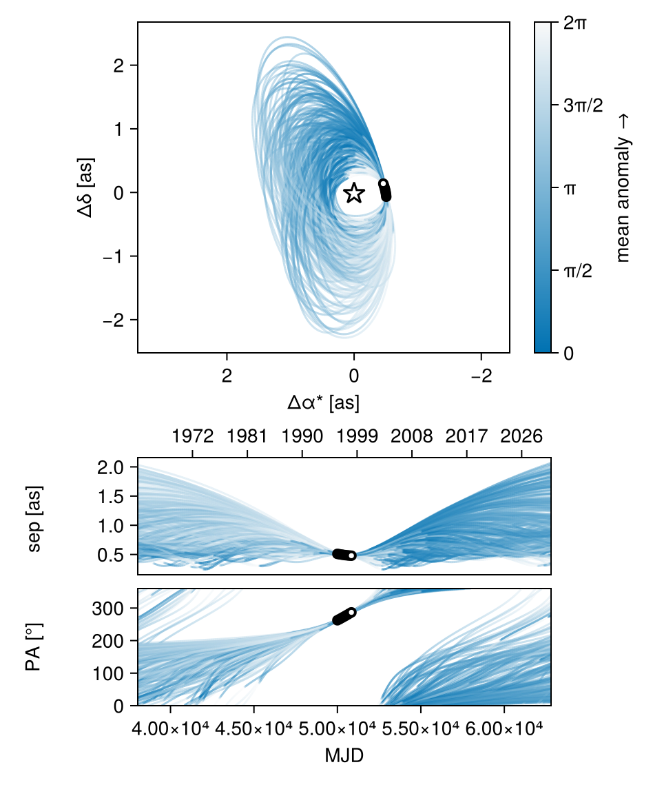
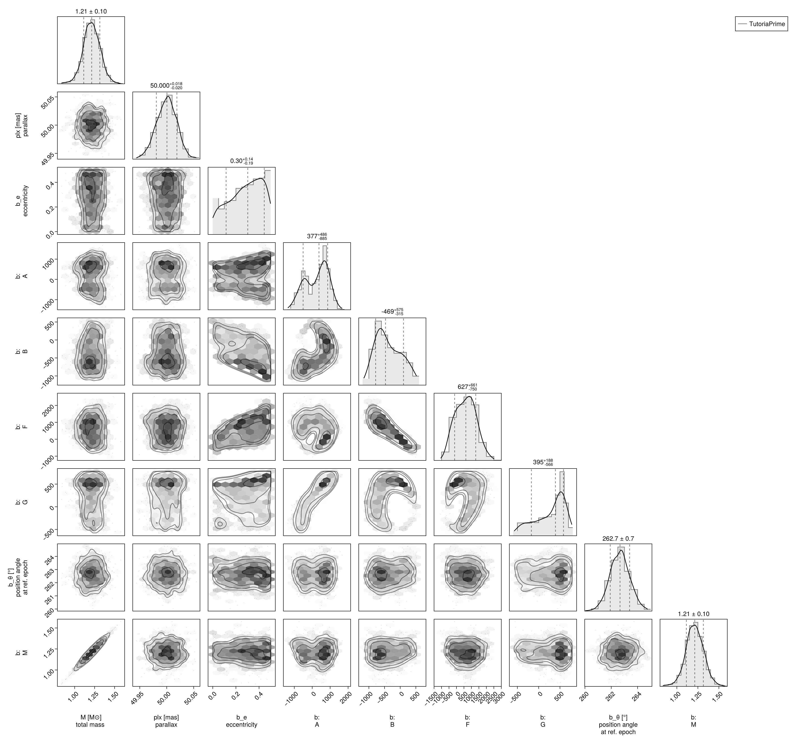
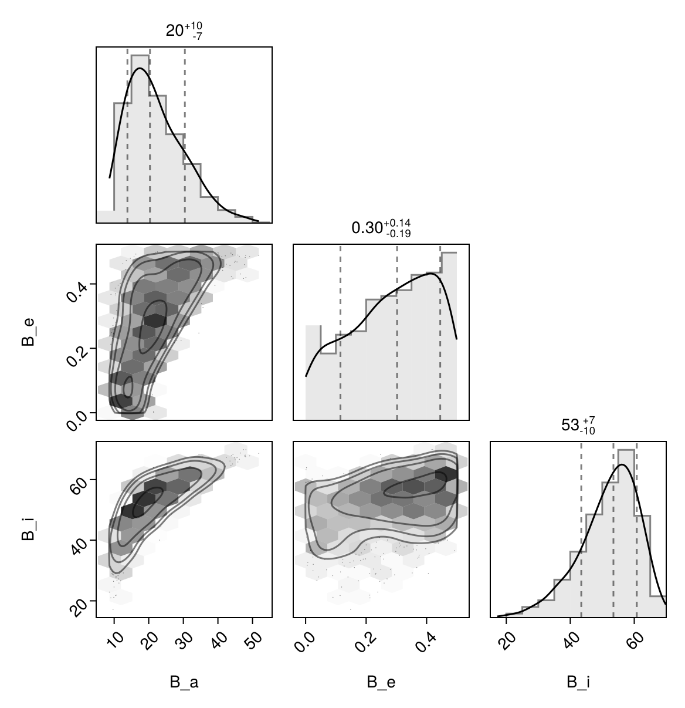

Fit with a Thiele-Innes Basis
This example shows how to fit relative astrometry using a Thiele-Innes orbital basis instead of the traditional Campbell basis used in other tutorials. The Thiele-Innes basis is more suitable then Campbell for fitting low-eccentricity orbits, because it does not have the issues where ω, Ω, and tp become degenerate as eccentricity and/or inclination fall to zero.
At the end, we will convert our results back into the Campbell basis to compare.
using Octofitter
using CairoMakie
using PairPlots
using Distributions
astrom_dat = Table(;
epoch = [50000, 50120, 50240, 50360, 50480, 50600, 50720, 50840],
ra = [-505.7637580573554, -502.570356287689, -498.2089148883798, -492.67768482682357, -485.9770335870402, -478.1095526888573, -469.0801731788123, -458.89628893460525],
dec = [-66.92982418533026, -37.47217527025044, -7.927548139010479, 21.63557115669823, 51.147204404903704, 80.53589069730698, 109.72870493064629, 138.65128697876773],
σ_ra = [10, 10, 10, 10, 10, 10, 10, 10],
σ_dec = [10, 10, 10, 10, 10, 10, 10, 10],
cor = [0, 0, 0, 0, 0, 0, 0, 0]
)
astrom_like = PlanetRelAstromLikelihood(
astrom_dat,
name = "GPI",
variables = @variables begin
# Fixed values for this example - could be free variables:
jitter = 0 # mas [could use: jitter ~ Uniform(0, 10)]
northangle = 0 # radians [could use: northangle ~ Normal(0, deg2rad(1))]
platescale = 1 # relative [could use: platescale ~ truncated(Normal(1, 0.01), lower=0)]
end
)
planet_b = Planet(
name="b",
basis=ThieleInnesOrbit,
likelihoods=[astrom_like],
variables=@variables begin
e ~ Uniform(0.0, 0.5)
A ~ Normal(0, 1000) # milliarcseconds
B ~ Normal(0, 1000) # milliarcseconds
F ~ Normal(0, 1000) # milliarcseconds
G ~ Normal(0, 1000) # milliarcseconds
M = system.M
θ ~ UniformCircular()
tp = θ_at_epoch_to_tperi(θ, 50000.0; system.plx, M, e, A, B, F, G) # reference epoch for θ. Choose an MJD date near your data.
end
)
sys = System(
name="TutoriaPrime",
companions=[planet_b],
likelihoods=[],
variables=@variables begin
M ~ truncated(Normal(1.2, 0.1), lower=0.1)
plx ~ truncated(Normal(50.0, 0.02), lower=0.1)
end
)
model = Octofitter.LogDensityModel(sys)LogDensityModel for System TutoriaPrime of dimension 9 and 9 epochs with fields .ℓπcallback and .∇ℓπcallback
Initialize the starting points, and confirm the data are entered correcly:
init_chain = initialize!(model)
octoplot(model, init_chain)We now sample from the model as usual:
results = octofit(model)Chains MCMC chain (1000×28×1 Array{Float64, 3}):
Iterations = 1:1:1000
Number of chains = 1
Samples per chain = 1000
Wall duration = 4.78 seconds
Compute duration = 4.78 seconds
parameters = M, plx, b_e, b_A, b_B, b_F, b_G, b_θx, b_θy, b_θ, b_M, b_tp, b_GPI_jitter, b_GPI_northangle, b_GPI_platescale
internals = n_steps, is_accept, acceptance_rate, hamiltonian_energy, hamiltonian_energy_error, max_hamiltonian_energy_error, tree_depth, numerical_error, step_size, nom_step_size, is_adapt, loglike, logpost, tree_depth, numerical_error
Summary Statistics
parameters mean std mcse ess_bulk ess_tai ⋯
Symbol Float64 Float64 Float64 Float64 Float6 ⋯
M 1.2123 0.1060 0.0047 534.8304 285.444 ⋯
plx 49.9996 0.0187 0.0006 1082.1832 523.540 ⋯
b_e 0.2855 0.1413 0.0099 211.3560 256.872 ⋯
b_A 233.4996 632.2887 51.2614 154.5899 440.280 ⋯
b_B -374.1469 402.5629 43.9531 93.2474 168.859 ⋯
b_F 610.0925 665.6646 70.3431 91.2193 160.549 ⋯
b_G 266.2742 349.9409 29.1934 152.5400 292.607 ⋯
b_θx -0.1287 0.0178 0.0007 644.4020 645.568 ⋯
b_θy -0.9977 0.0912 0.0030 910.2122 704.767 ⋯
b_θ -1.6991 0.0132 0.0006 541.7513 636.298 ⋯
b_M 1.2123 0.1060 0.0047 534.8304 285.444 ⋯
b_tp 28910.1724 21517.5636 1290.1655 313.2953 499.616 ⋯
b_GPI_jitter 0.0000 0.0000 NaN NaN Na ⋯
b_GPI_northangle 0.0000 0.0000 NaN NaN Na ⋯
b_GPI_platescale 1.0000 0.0000 NaN NaN Na ⋯
3 columns omitted
Quantiles
parameters 2.5% 25.0% 50.0% 75.0% ⋯
Symbol Float64 Float64 Float64 Float64 F ⋯
M 1.0058 1.1451 1.2129 1.2827 ⋯
plx 49.9625 49.9868 50.0004 50.0125 5 ⋯
b_e 0.0157 0.1800 0.3023 0.4061 ⋯
b_A -948.2615 -353.7139 377.0830 739.4646 121 ⋯
b_B -995.1816 -687.1514 -469.0421 -51.0044 43 ⋯
b_F -546.7853 83.3356 627.1327 1083.0204 192 ⋯
b_G -481.8932 18.2966 394.7615 537.5368 70 ⋯
b_θx -0.1656 -0.1402 -0.1283 -0.1170 - ⋯
b_θy -1.1853 -1.0539 -0.9910 -0.9407 - ⋯
b_θ -1.7252 -1.7079 -1.6988 -1.6903 - ⋯
b_M 1.0058 1.1451 1.2129 1.2827 ⋯
b_tp -25875.7635 17162.9402 34824.6487 47814.2470 4965 ⋯
b_GPI_jitter 0.0000 0.0000 0.0000 0.0000 ⋯
b_GPI_northangle 0.0000 0.0000 0.0000 0.0000 ⋯
b_GPI_platescale 1.0000 1.0000 1.0000 1.0000 ⋯
1 column omitted
Notice that the fit was very very fast! The Thiele-Innes orbital paramterization is easier to explore than the default Campbell in many cases.
We now display the results:
octoplot(model,results)
octocorner(model, results, small=false)
Conversion back to Campbell Elements
To convert our chain into the more familiar Campbell parameterization, we have to do a few steps. We start by turning the chain table into a an array of orbit objects, and then convert their type:
orbits_ti = Octofitter.construct_elements(model, results, :b, :) # colon means all rows1000-element Vector{ThieleInnesOrbit{Float64}}:
ThieleInnesOrbit{Float64}(0.032454084042727586, 49984.76870154075, 1.1601314610425808, 50.00569326150691, -76.58106223995806, -525.9732228245301, 706.238084488939, 83.36397755241754, -10.198531189691366, -3.8401366865673725, 19172.271489496732, 0.11970065386903121, 1.0329982391388255)
ThieleInnesOrbit{Float64}(0.1899768796373195, 48790.03367406718, 1.1651350276883834, 50.01315727142071, -435.18007548567897, -612.3114208685611, 803.3929583524355, -116.93400764242148, -11.476287776049203, -9.685163821652473, 27809.51830431813, 0.08252330760763293, 1.21205005107619)
ThieleInnesOrbit{Float64}(0.29205476626579563, 49093.43779085516, 1.2548258161040142, 49.97353739682511, -420.87869560689404, -729.1963965550943, 1042.3939712184483, -53.242022043744356, -15.922382134453368, -10.056815629098486, 36392.445518988534, 0.06306070946097628, 1.350954213372659)
ThieleInnesOrbit{Float64}(0.4530470362082604, 1221.4163319516374, 1.298063784934474, 49.974954884451, 1326.0698256114615, -210.96040474739132, 673.0505178191411, 742.166306640493, -13.240590651806894, 22.255264117081115, 52556.38836824396, 0.04366611756819285, 1.6299145868836524)
ThieleInnesOrbit{Float64}(0.4004219160691444, 9820.607569861408, 1.2492918503895845, 49.97453407985317, 1166.4561760651245, -258.33555711737864, 589.070668799314, 656.5859345084158, -10.70631475685325, 19.354304132508464, 43810.76406886087, 0.0523828671383182, 1.5282928256473634)
ThieleInnesOrbit{Float64}(0.4479731002113693, -19445.509149317004, 1.325432469607028, 49.95833209790465, 1336.5054655584488, -481.1634600033882, 1311.5138766264201, 664.5464044854396, -24.571308901715295, 23.36841827966076, 73087.36106272704, 0.03139986722844902, 1.6195715022779777)
ThieleInnesOrbit{Float64}(0.45401341965193553, -6603.648979983438, 1.2384409668012215, 50.00321398368114, 885.0952587748656, -674.6673652265722, 1317.333876020756, 535.2603889558266, -22.68535366503559, 14.189592162373286, 58802.85346932584, 0.03902758621474861, 1.631898800462038)
ThieleInnesOrbit{Float64}(0.3903437947499909, 33148.96280378238, 1.2360099951627475, 50.0030473231832, 731.969112771129, -139.52616338810066, -6.4055338113531235, 580.4908182989424, -3.441876757411272, -9.95641303689204, 19651.021805823126, 0.11678443269384056, 1.5101448370148318)
ThieleInnesOrbit{Float64}(0.43794387905437254, 33992.53760307361, 1.370695386836974, 50.00557005812474, 730.0277045312074, 161.3165083020807, -300.95919361964445, 480.01666382675677, -5.156374561754004, -11.034283236721729, 19622.041318280317, 0.11695691575724766, 1.5994885199333875)
ThieleInnesOrbit{Float64}(0.35116301945000505, 31491.051773147075, 1.2570935583223972, 50.02127159154983, 829.1309730285808, 47.09646734353488, -106.84407718054226, 544.2357365880226, -2.009758145108638, -12.519440768358237, 22279.473209870746, 0.10300662909886898, 1.443065612757085)
⋮
ThieleInnesOrbit{Float64}(0.335503060013245, -325.5344993641338, 1.1466247908376146, 49.977964597233736, 315.36043757790804, -648.1740809400987, 1318.1322496357113, 515.5211117107972, -24.408466944369675, 1.3374253787421366, 51492.55371112569, 0.044568258282973665, 1.4176726176685568)
ThieleInnesOrbit{Float64}(0.2525981480362284, 49867.12085225662, 1.2109495071680978, 49.994923261428475, -127.28129306843854, -690.6525485628918, 1089.1622138170596, 202.05843367666296, -18.194437480187343, -6.117004636005404, 36578.99384110664, 0.06273910768065878, 1.2945797153386067)
ThieleInnesOrbit{Float64}(0.22727689190736675, 49850.396350706345, 1.22043032608204, 50.00216121758888, -128.0254192065614, -673.7771235438832, 1078.0919093482714, 193.5960101433638, -18.082937489365445, -5.937984905438647, 35749.915443037244, 0.06419409402811083, 1.2602576099977714)
ThieleInnesOrbit{Float64}(0.09463718541130009, 49653.022522675004, 1.0241848249863046, 49.99600782562118, -172.83576039834333, -556.1434877732275, 573.6801209921916, -64.31079596735198, -4.919500241343527, -5.1547132556237045, 16228.402379107414, 0.14141462479398842, 1.099572252903708)
ThieleInnesOrbit{Float64}(0.23854749663864588, 49954.7332025864, 1.060025343536724, 49.99617722769877, -101.78893611414676, -671.1612432356814, 902.3614448316935, 137.42897284035502, -13.3871716673775, -5.501253543361194, 29538.133453437596, 0.07769392189472499, 1.2753662601294082)
ThieleInnesOrbit{Float64}(0.20653095201865806, 21292.756079748327, 1.0583645901225263, 50.00706614281452, 246.76646139133564, -547.4907746907311, 888.4094355415031, 358.9800875419058, -14.943392572735531, 0.6072236697218613, 29801.741506898343, 0.0770066887841479, 1.2331168683586748)
ThieleInnesOrbit{Float64}(0.26970037361744015, 49923.33264372273, 0.9453589093668727, 50.008009844426994, -101.17769397994562, -694.061881012832, 1073.757870884658, 157.02771520790733, -17.304991741913717, -5.0287822201063985, 39494.04625146148, 0.05810833913636843, 1.318560569772865)
ThieleInnesOrbit{Float64}(0.10456425697514105, 23365.988506405927, 1.0078938690065755, 50.02255129933859, 76.71776563494947, -545.8659013188665, 868.5870536506857, 177.00837745238408, -13.904572678845765, -0.8618674972906151, 27188.526491149147, 0.08440815776443156, 1.1106527077947674)
ThieleInnesOrbit{Float64}(0.06354072863433002, 35194.50068409238, 0.9638625212609626, 50.00108350456163, 37.595918773580905, -525.7793073099228, 547.3227417135504, 134.79038011875633, -5.441829184425789, -3.6966034775347616, 15203.05738596656, 0.15095209964580683, 1.0656942343300426)Here is one of those entries:
display(orbits_ti[1])We can now make a table of results (and visualize them in a corner plot) by querying properties of these objects:
table = (;
B_a = semimajoraxis.(orbits_ti),
B_e = eccentricity.(orbits_ti),
B_i = rad2deg.(inclination.(orbits_ti)),
)
pairplot(table)
We can also convert the orbit objects into Campbell parameters:
orbits_campbell = Visual{KepOrbit}.(orbits_ti)
orbits_campbell[1]KepOrbit{Float64}
─────────────────────────
a [au ] = 14.7
e = 0.032454084
i [° ] = 47.7
ω [° ] = 249.0
Ω [° ] = 20.9
tp [day] = 50000.0
M [M⊙ ] = 1.16
period [yrs ] : 52.5
mean motion [°/yr] : 6.86
──────────────────────────
plx [mas] = 50.0
distance [pc ] : 20.0
──────────────────────────